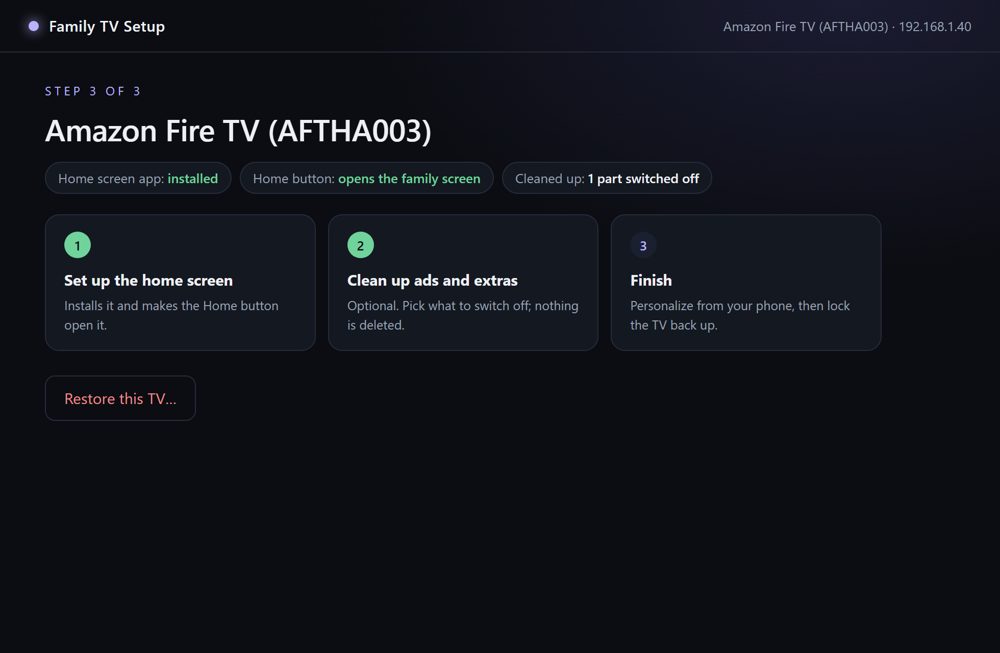
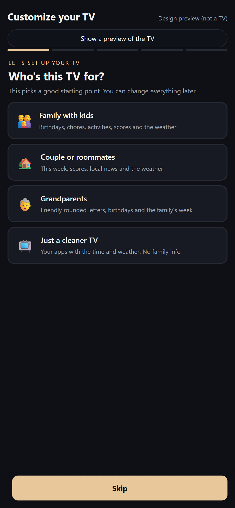
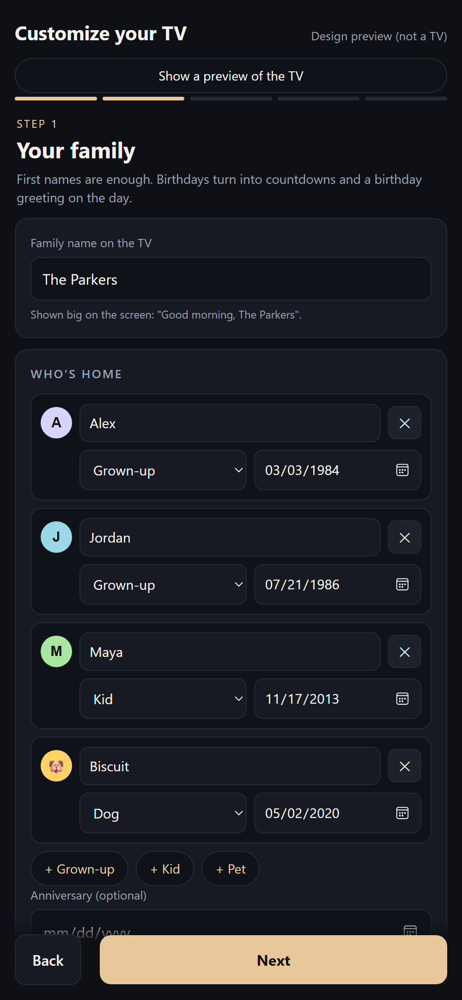
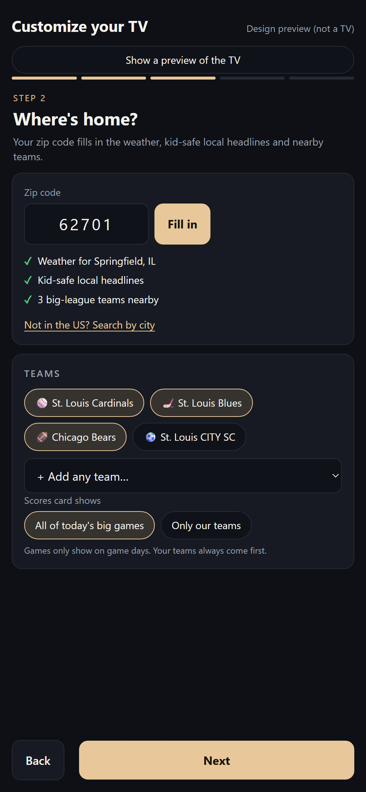
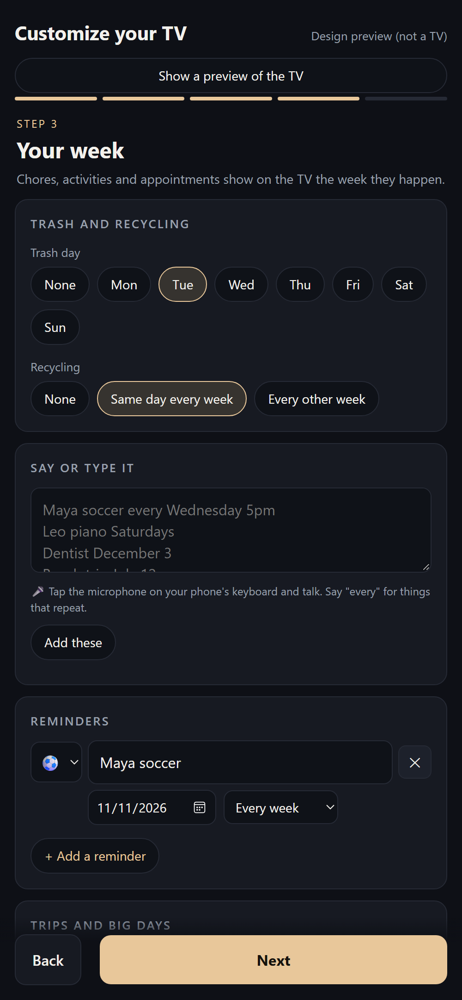
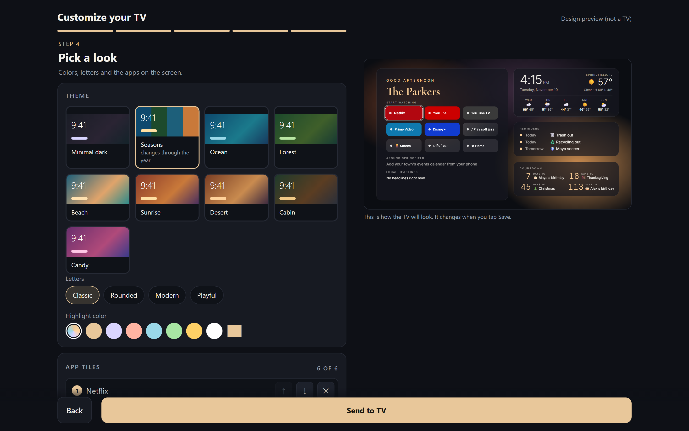

You'll see a warning the first time. The app is free and made by a family member, not a company, so it isn't "signed" by Microsoft or Apple. Here's how to open it:
Windows protected your PC
Windows stopped an app it doesn't recognize from starting.
More info
Don't run
1Open the download. If a blue box says Windows protected your PC, click More info.
2Click Run anyway. Family TV Setup installs and opens by itself.
Finding it later: it's called Family TV Setup (the icon is a TV with a heart). There's a shortcut on your desktop, or click Start and type Family TV. To keep it handy, right-click it and choose Pin to taskbar.
📺
Family TV Setup
→
A
Applications
1Open the download and drag Family TV Setup into Applications. Then open it from Applications.
"Family TV Setup" Not OpenedDoneMove to Trash
2If it says the app can't be opened, click Done (not Move to Trash).
Wi-FiGeneralPrivacy & SecurityDisplays
Security
"Family TV Setup" was blocked.Open Anyway
3Open System Settings → Privacy & Security, scroll down and click Open Anyway. You only do this once.
Finding it later: it's called Family TV Setup (the icon is a TV with a heart), in your Applications folder. Or press ⌘ Space and type Family TV. To keep it handy, while it's open right-click its Dock icon and choose Options → Keep in Dock.
3Set up the TV
Open Family TV Setup and click Find my TV.
On the TV, a box asks "Allow USB debugging?" Tick Always allow from this computer, then OK.
Click Set up the home screen. Press Home on your remote to see it.
Optional: Clean up ads and extras. Nothing is deleted, and it can all be switched back.
Click Finish. This switches developer mode off again.

4Make it yours from your phone
On the TV: All apps → ⚙ Customize this screen. Scan the code with your phone camera. A few short steps and you're done.

Who's it for

Your family

Your zip code does the rest

Your week
On a laptop you get a live preview of the TV while you pick colors:

Changed your mind?
Put everything back
Turn developer mode on again (step 1), open Family TV Setup and click Restore this TV. It switches back on everything it switched off and gives you your old home screen.
Just remove it
On the TV: Settings → Applications → Manage installed applications → Home Screen → Uninstall. Your TV's own home comes back.
Your privacy
No accounts and no sign-ups. Nothing to log in to.
Your family's names, birthdays and reminders are saved only on your TV.
The phone page only works on your home Wi-Fi, with a code shown on the TV.
The TV only reaches out for public things: weather, scores and local headlines.
Kid-friendly: headlines about crime, accidents, courts and politics are never shown.
Questions
Does Netflix, YouTube and everything else still work?
Yes. Your apps are on the home screen, and All apps shows everything. Nothing is uninstalled.
No computer? (Fire TV only)
Install the free Downloader app on the Fire TV, open it and type this address: . Install, then open Home Screen. Without the computer step the Home button keeps going to Amazon's home, so open Home Screen from your apps.
How do I get updates?
Download Family TV Setup again from this page and run it. It updates the TV and keeps your family's settings.
Is it really free?
Yes. No ads, no subscription, no data collected. It's a family project shared with friends. If you'd like to say thanks, there's an optional tip jar on Ko-fi.
Enjoying it?
It's free and always will be. If it made your TV a little nicer, you can buy me a coffee. Completely optional.